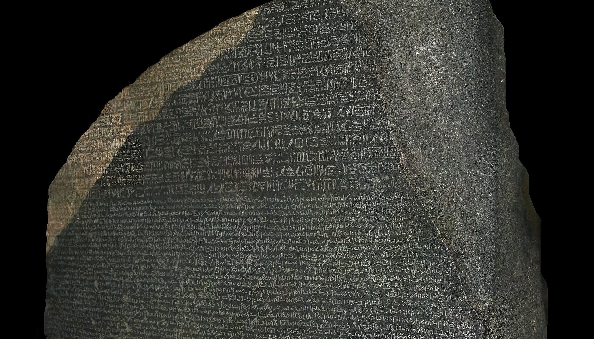

上の段で楕円の枠に囲まれた一群が王の名だと見抜かれたとき、石の刻み目は文として読まれはじめた。
Hans Hillewaert／CC BY-SA 4.0／Wikimedia Commons（ロゼッタ・ストーン、前196年、大英博物館。上半分を横長に切り出した）
第0部「記号と言葉」の最初の回。数式は「主語と述語のある文」であること、等号の種類、文字の読み方、そして省略の段階という考え方を、ゆっくり確かめる。以後のすべての回は、この回の記号と「省略の段階」にリンクして戻れる。
この回の論理の幹：数式には名詞にあたるもの（式）と文にあたるもの（関係式）がある → 文を作る記号は「等号」だけではなく、種類ごとに意味が違う → 文字は読み方・添字・肩の数字で意味が変わる → 数学の本は、約束ごとを使って書き方を省略している。その省略を1段ずつ元に戻して読めるようになる。
この回の使い方
この教材は、数学の本で説明されないまま使われている約束ごとを、全部ことばにして書く。「こんなこと知っている」と思う部分は、飛ばして次へ進んでよい。ただし、飛ばしたはずの記号が後の回でわからなくなったら、その記号のところへリンクで戻れるようになっている。
記号が出てくるたびに、緑色の枠（記号）で「①読み方 ②日本語での意味 ③省略していない書き方 ④どこで出会うか」を書く。全部の記号は 記号索引 からも探せる。
0この回で使う記号
まず、この回で新しく説明する記号の一覧。右の列の「→」で、説明のある節へ飛べる。（第1回は最初の回なので、「前の回で出た記号」はない。）
| 記号 | 読み方 | ざっくりした意味 | 説明 |
|---|
| $=$ | イコール | 左と右が同じ値 | →2.1 |
| $:=$ | コロンイコール | 左の名前を、右の式で決める | →2.2 |
| $\equiv$ | 合同／恒等 | どんな値でも常に同じ | →2.3 |
| $\approx$ | ニアリーイコール | だいたい同じ | →2.4 |
| $\propto$ | 比例 | 左は右の定数倍 | →2.5 |
| $\neq$ | ノットイコール | 等しくない | →2.6 |
| $\lt\ \gt\ \le\ \ge$ | 未満・より大きい・以下・以上 | 大小の関係 | →2.6 |
| $x_1$（添字） | エックス・いち（エックス・ワン） | 名前に番号やラベルをつける | →4.1 |
| $x^2$（肩の数字） | エックスの二乗 | 冪（べき） | →4.2 |
| $x^{(2)}$ | エックスの括弧二 | 2番目の何か（冪ではない） | →4.3 |
| $x'$ | エックス・プライム | 別のもの、または微分 | →4.4 |
| $\cdots$（三点リーダー） | てんてんてん | 同じ規則で続く部分を省く | →4.5 |
| ギリシャ文字 | アルファ、ベータ… | 文字の足りない分を補う | →3 |
1数式は「文」でできている
1.1動機：読めないのは「文の切れ目」がわからないから
数学の本のページを開くと、記号が並んでいる。これを「なんとなく雰囲気で」眺めていると、1行がどこで切れて、どの部分が主張で、どの部分が材料なのか、わからなくなる。それが「記号がわからない」という感覚の、かなり大きな原因になっている。
日本語の文には、「何が（主語）」「どうする／どうだ（述語）」がある。数式にも、これと同じものがある。それを最初に区別しておく。
1.2定義：式と関係式
記号：式（しき）と関係式（かんけいしき）
①読み方：「しき」「かんけいしき」。
②日本語での意味：式とは、計算した結果として1つの値（または1つの量）になる記号の並び。日本語でいえば名詞（のかたまり）。関係式とは、2つの式を等号や不等号などでつないで、正しいか正しくないかを言える形にしたもの。日本語でいえば文。
③省略していない書き方：この区別そのものに略記はない。ただし本によっては、関係式のことも単に「式」と呼ぶ。この教材では区別して書く。
④どこで出会うか：すべての科目。
例を並べる。
| 書いたもの | 式か関係式か | 日本語に直すと |
|---|
| $x+1$ | 式（名詞） | 「$x$ に1を足したもの」 |
| $3$ | 式（名詞） | 「3」 |
| $x+1=3$ | 関係式（文） | 「$x$ に1を足したものは、3に等しい」 |
| $x+1\lt 3$ | 関係式（文） | 「$x$ に1を足したものは、3より小さい」 |
| $x+1=3$ ならば $x=2$ | 関係式をつないだ文 | 「前の文が正しいなら、後ろの文も正しい」 |
「$x+1$」だけを書いて止まるのは、日本語で「りんごの」とだけ言って止まるのに近い。何も主張していない。主張は、関係式になって初めて生まれる。
上の表の3行目を、日本語の文と部品ごとに対応させると、図1.1 のようになる。語順は入れかわるが、部品の役割（名詞か、関係を言う語か）は一対一に対応している。
図 1.1 「$x$ に1を足したもの」と「3」が式（名詞）、「に等しい」が記号 $=$ にあたる。式だけでは何も主張せず、関係の記号でつないだ全体が初めて文になる。
ひとことで数式の中には、名詞にあたる「式」と、文にあたる「関係式」がある。関係式は「正しいか正しくないか」が言える。
1.3最小の具体例：正しい文・正しくない文・まだわからない文
関係式には、次の3つの状態がある。
- いつでも正しい：$1+1=2$。
- いつでも正しくない：$1+1=3$。（これも「文」である。正しくない文を書くことはできる。）
- 文字の値しだいで変わる：$x+1=3$。$x=2$ のときだけ正しい。
3番目の「文字の値しだいで変わる文」を、条件と呼ぶ。「$x+1=3$ を解く」とは、「この文が正しくなるような $x$ の値をすべて探す」ことである。答え「$x=2$」もまた1つの関係式（文）で、「$x$ は2である」と読む。
図1.2 で、文 $x+1=3$ に $x$ の値を1つずつ入れて確かめる。左辺（等号の左側の式）を計算し、右辺（右側の式）の3と比べる。
図 1.2 同じ文 $x+1=3$ でも、$x$ の値によって正しかったり正しくなかったりする。このような文を条件と呼ぶ。
よくある誤解
「$=$ の右に答えを書く記号だ」と思っていると、$x+1=3$ を「$x+1$ を計算して3を出せ」と読んでしまう。正しくは「$x+1$ と $3$ が同じ値になっている」という主張（または条件）である。計算の指示ではない。
ひとことで関係式は3種類ある：いつでも正しい／いつでも正しくない／値しだいで変わる。「方程式を解く」は、3番目の文が正しくなる値を探すこと。
PHOTO 1｜現実
ディオファントス『算術』の写本では、方程式は記号の行としてではなく、文章の流れの中に書かれている。
Diophantus of Alexandria（写本）／Public domain／Wikimedia Commons（ヴァチカン図書館 Vat. gr. 191）
MITATE 1｜見立て
レ点と一二点は、語順の違う文を、自分の言葉の文として読み下すための小さな記号である。
風来山人 訳『刪笑府』（撮影 WikiTaro）／Public domain／Wikimedia Commons（安永5年＝1776年刊）
2等号は1種類ではない
2.0動機
多くの人が「$=$」を1種類の記号だと思っている。ところが数学の本は、同じ「$=$」の形でまったく違う3つの用法を、説明なしに混ぜて書く。ここがわからなくなる、最初の落とし穴になる。以下、1つずつ区別する。
2.1イコール $=$（主張・条件・恒等式の3つの顔）
記号：$=$
①読み方：「イコール」。文として読むときは「〜は…に等しい」「〜は…である」。
②日本語での意味：左の式と右の式が、同じ値になっているという主張。
③省略していない書き方：$=$ 自体は省略形ではない。ただし3つの顔がある（下の表）。どの顔なのかは、記号に書いていない。文脈から読み取る約束になっている。
④どこで出会うか：すべての科目。
| 顔 | 例 | 日本語で言うと | 見分け方 |
|---|
| (a) 条件（方程式） | $x+1=3$ | 「$x$ がこの値のときだけ正しい」 | $x$ が求めたい未知数のとき |
| (b) 恒等式 | $(x+1)^2=x^2+2x+1$ | 「$x$ が何であっても常に正しい」 | $x$ がどんな値でもよいとき。「展開する」「公式」 |
| (c) 結果の記述 | $2+3=5$ | 「計算した結果は5である」 | 文字がなく、数だけのとき |
(a) と (b) の違いを、実際に確かめる。$x=2$ を入れてみる。
- (a) $x+1=3$：左は $2+1=3$、右は $3$。一致する。ただし $x=5$ を入れると、左は $5+1=6$、右は $3$ で一致しない。→ 値しだいで変わる。
- (b) $(x+1)^2=x^2+2x+1$：$x=2$ では、左は $(2+1)^2=9$、右は $2^2+2\cdot 2+1=4+4+1=9$。一致する。$x=5$ では、左は $(5+1)^2=36$、右は $25+10+1=36$。一致する。どの値を入れても一致する。
(a) と (b) の違いをグラフにすると、図2.1 になる。左辺と右辺をそれぞれ $y=\ldots$ のグラフとして描き、2本がどこで重なるかを見る。重なっている $x$ では、文が正しい。
図 2.1 (a) 条件では、2本のグラフは1点（$x=2$）でしか交わらない。(b) 恒等式では、2本のグラフはすべての $x$ で重なり、1本にしか見えない。
なお、2.1 で使った 掛け算の「$\cdot$」と、記号を書かずに並べる書き方は、第6節の「省略の段階」でまとめて説明する。
よくある誤解
(a) と (b) を取り違えると、「$x$ を求めよ」と言われていないのに $(x+1)^2=x^2+2x+1$ を解こうとして、「$x$ は任意」という答えになって混乱する。逆に、(a) を恒等式のつもりで使うと、「$x+1=3$ だから $x$ に何を入れても $x+1$ は3だ」という誤りにつながる。
ひとことで同じ「$=$」でも、「この値のときだけ正しい（条件）」「どの値でも正しい（恒等式）」「計算結果の記述」の3つの顔がある。文字が未知数か何でもよい文字かで見分ける。
PHOTO 2｜現実
1557年、レコードは「これほど等しい二つのものはない」として平行な二本線を等号に選び、その下に最初の等式を組んだ。
Robert Recorde, The Whetstone of Witte／Public domain／Wikimedia Commons（1557年、p.238）
MITATE 2｜見立て
同じ一枚の面が、少し上を向けば笑みを、少し伏せれば憂いを帯びる。
東京国立博物館（ColBase）／Public domain／Wikimedia Commons（小面、C-1551）
2.2定義の等号 $:=$
「$x+1=3$」の $=$ は、正しいかどうかを問える文を作った。しかし、次のような書き方もある。
$$ v := \frac{\Delta x}{\Delta t} $$
これは「$v$ は $\Delta x/\Delta t$ に等しい」という主張ではない。「$v$ という名前を、右の式のことにする」という命名（約束）である。正しいか正しくないかを問う文ではない。
$=$ と $:=$ の働きの違いを、図2.2 に並べる。
図 2.2 $=$ は、左右の値を比べて正しいかどうかを問う。$:=$ は比べない。右の式に、左の名前を札のように掛ける宣言である。
記号：$:=$
①読み方：「コロンイコール」。文として読むときは「左を、右で定義する」。
②日本語での意味：左の名前を、右の式のことだと決める。コロンのある側（左）が、これから決められる名前である。
③省略していない書き方：次のように日本語で書いたものを、記号1つにまとめている。
「$v$ を、$\Delta x/\Delta t$ のことと定める」または「$v$ とは $\Delta x/\Delta t$ のことである」。
④どこで出会うか：物理・工学の教科書の「定義」。量子力学・機械力学・制御工学。
流派の違い：定義の等号の書き方
教科書によって、定義の等号は次のように書き分けられる。どれも同じ意味で、「$=$」とも区別されないことがある。
- $v := \dfrac{\Delta x}{\Delta t}$（コロンの側が新しい名前。この教材ではこれを使う）
- $v \equiv \dfrac{\Delta x}{\Delta t}$（三本線を定義に使う流派）
- $v \overset{\text{def}}{=} \dfrac{\Delta x}{\Delta t}$（等号の上に def と書く流派）
- $v = \dfrac{\Delta x}{\Delta t}$（何も区別せず「$=$」で書く流派）
最後のものが最も困る。「これは定義なのか、導かれた結果なのか」が、文脈からしか読み取れない。本を読むときは、「この等号の右辺は、さっき使った記号だけで書けているか（結果）、それともまだ名前のなかったものに名前をつけているか（定義）」を確かめるとよい。
ひとことで$:=$ は「左の名前を、右の式で決める」。正しいか正しくないかを問う文ではなく、名前をつける宣言。
2.3恒等の記号 $\equiv$
記号：$\equiv$
①読み方：「合同」「恒等的に等しい」。文として読むときは「いつでも等しい」。
②日本語での意味：文字にどんな値を入れても等しい。2.1 の(b)（恒等式）をわざわざ強調するときに使う。例：$(x+1)^2\equiv x^2+2x+1$。
③省略していない書き方：「すべての $x$ について、$(x+1)^2=x^2+2x+1$」。つまり、「すべての…について」を記号 $\equiv$ の中に折りたたんでいる。（「すべての」を表す記号 $\forall$ は第2回で扱う。）
④どこで出会うか：微分方程式（「$f(x)\equiv 0$」は「すべての $x$ で $f(x)=0$」の意味）、線形代数、数論（別の意味：合同式）。
注意：$\equiv$ は流派で意味が違う
$\equiv$ には少なくとも3つの用法がある。
- 恒等的に等しい（ここで説明した意味）
- 定義する（2.2 の流派）
- 合同式（整数の割り算の余りが等しい。$7\equiv 1 \pmod 3$）。この教材では扱わない。
どの意味かは、その本が最初に宣言していることが多い。読み始めに「記号の約束」のページがないかを探す習慣をつける。
2.4だいたい等しい $\approx$
記号：$\approx$
①読み方：「ニアリーイコール」。文として読むときは「ほぼ等しい」「近似的に等しい」。
②日本語での意味：厳密には等しくないが、目的に対して十分近い。「どれくらい近いのか」は、この記号には書かれていない。
③省略していない書き方：書かれていない部分を補うと、「差の絶対値が、問題にしている誤差の範囲より小さい」。例：$\sin 0.1 \approx 0.1$ は、「$|\sin 0.1 - 0.1|$ は小さい」の省略。
④どこで出会うか：物理（微小振動の近似）、数値計算、テイラー展開（第9回）。
実際にどれくらい近いのかを、数で確かめる。
| $x$ | $\sin x$ | $x-\sin x$（ずれ） |
|---|
| $0.5$ | $0.479426$ | $0.020574$ |
| $0.1$ | $0.099833$ | $0.000167$ |
| $0.01$ | $0.0099998$ | $0.00000017$ |
$x$ が小さいほど、ずれはさらに急に小さくなる。だから「$x$ が小さいとき $\sin x\approx x$」と書ける。$x=3$ では使えない（$\sin 3 = 0.1411\ldots$、$3$ とはまったく違う）。$\approx$ はどの範囲で成り立つかを必ず確認して使う記号である。
表の数を、図2.3 のグラフで見る。2本の線のあいだの幅が、ずれ $x-\sin x$ である。
図 2.3 $x$ が0に近いところでは2本の線はほとんど重なり（$x=0.5$ でずれ約0.02）、$x$ が大きくなると離れていく（$x=3$ でずれ約2.86）。$\sin x\approx x$ が使えるのは左端の狭い範囲だけである。
ひとことで$\approx$ は「ほぼ等しい」。ただし「どれくらいほぼか」「どの範囲でか」は記号に書かれていない。範囲は自分で確かめる。
2.5比例 $\propto$
記号：$\propto$
①読み方：「比例」。$y\propto x$ は「$y$ は $x$ に比例する」。
②日本語での意味：ある定数 $k$ があって、$y=kx$ と書ける。
③省略していない書き方：「$y\propto x$」$\;\Leftrightarrow\;$「ある定数 $k$ が存在して、$y=kx$」。定数 $k$ の値は記号に書かれていない。（$\Leftrightarrow$ と「存在して」は第2回で説明する。）
④どこで出会うか：物理・工学のスケーリング（$F\propto m$、$T\propto \sqrt{\ell}$）。
よくある誤解
$y\propto x$ と $y=x$ は違う。$y\propto x$ は、右辺に定数倍がついている可能性を含む。一方、「$y\propto x+1$」のように書くと、$y=k(x+1)$ という意味になる。$x=0$ のとき $y=k\neq 0$ なので、いわゆる「正比例」（原点を通る）とは別物になる。
$y\propto x$ のグラフを、定数 $k$ を変えて何本か描くと、図2.4 になる。
図 2.4 実線は $y=kx$（$k=2,\ 1,\ 0.5$）。$k$ が何であっても原点を通る直線になる。点線の $y=1\cdot(x+1)$ は「$y\propto x+1$」の一例で、原点を通らない。
2.6等しくない・大小の関係
記号：$\neq$
①読み方：「ノットイコール」。「〜は…に等しくない」。
②日本語での意味：左と右が違う値である。
③省略していない書き方：「$a\neq b$」は「『$a=b$』という文が正しくない」の省略。
④どこで出会うか：割り算の条件（「$x\neq 0$」）、固有値の議論（第20回）。
記号：$\lt\ \gt\ \le\ \ge$
①読み方：$a\lt b$ は「$a$ は $b$ より小さい」（$a$ は $b$ 未満）。$a\gt b$ は「$a$ は $b$ より大きい」。$a\le b$ は「$a$ は $b$ 以下」。$a\ge b$ は「$a$ は $b$ 以上」。
②日本語での意味：数の大小の順序を表す。$\lt\ \gt$ は等しい場合を含まず、$\le\ \ge$ は等しい場合を含む。
③省略していない書き方：$a\le b$ は「$a\lt b$ または $a=b$」。「または」は第2回で記号 $\lor$ として扱う。
④どこで出会うか：区間（第2回）、極限の定義（第6回）、不等式の評価。
$\lt$ と $\le$ の違いは、数直線に描くと1点だけの違いとして見える（図2.5）。
図 2.5 色の帯が、文を正しくする $x$ の範囲である。$x\lt 2$ と $x\le 2$ の違いは、端の2を含むかどうかの1点だけである。白丸は含まない、黒丸は含むという描き方の約束である。
流派の違い：$\le$ の別の書き方
$\le$ を $\leqq$（二重線）や $\leqslant$（斜め線）と書く本がある。意味は同じ。$\ge$ にも別の書き方がある。この教材では $\le\ \ge$ で統一する。
ひとことで$\neq$ は「等しくない」、$\le$ は「小さいか等しい」。どちらも「関係式（文）」を作る記号。
3文字をどう読むか：ギリシャ文字
3.1動機
数学や物理では、$a,b,c,\ldots,x,y,z$ だけでは文字が足りなくなる。そこでギリシャ文字を借りる。読み方を知らないと、声に出して読めないため、式を文として読む練習ができない。最初に表を作っておく。
3.2表：よく使うギリシャ文字
記号：ギリシャ文字
①読み方：下の表のとおり。
②日本語での意味：文字にすぎない。特定の意味が決まっているわけではなく、慣習として使われる場所がある。
③省略していない書き方：略記ではない。ただし、物理・工学の本では、慣習により文字を読む前から意味が想像される。慣習は慣習であり、その本が別の使い方を宣言していたら、そちらが優先。
④どこで出会うか：すべて。
| 小文字 | 大文字 | 読み | よくある使われ方（慣習） |
|---|
| $\alpha$ | $A$ | アルファ | 角度、係数、加速度（角） |
| $\beta$ | $B$ | ベータ | 角度、係数 |
| $\gamma$ | $\Gamma$ | ガンマ | せん断ひずみ、比熱比、ガンマ関数 |
| $\delta$ | $\Delta$ | デルタ | 微小量（$\delta$）、変化量（$\Delta$）、クロネッカー、ディラック |
| $\varepsilon$（$\epsilon$） | $E$ | イプシロン | 微小量、ひずみ、誘電率 |
| $\zeta$ | $Z$ | ゼータ | 減衰比 |
| $\eta$ | $H$ | イータ | 効率、粘性 |
| $\theta$（$\vartheta$） | $\Theta$ | シータ | 角度 |
| $\kappa$ | $K$ | カッパ | 曲率、熱伝導 |
| $\lambda$ | $\Lambda$ | ラムダ | 固有値、波長 |
| $\mu$ | $M$ | ミュー | 平均、摩擦係数、$10^{-6}$（マイクロ） |
| $\nu$ | $N$ | ニュー | 動粘度、ポアソン比、振動数 |
| $\xi$ | $\Xi$ | クシー | 座標、変数 |
| $\pi$ | $\Pi$ | パイ | 円周率（小文字）、総乗（大文字、第4回） |
| $\rho$ | $P$ | ロー | 密度、相関係数 |
| $\sigma$ | $\Sigma$ | シグマ | 応力、標準偏差（小文字）、総和（大文字、第4回） |
| $\tau$ | $T$ | タウ | せん断応力、時定数 |
| $\phi$（$\varphi$） | $\Phi$ | ファイ | 角度、位相、ポテンシャル |
| $\chi$ | $X$ | カイ | 感受率、カイ二乗分布 |
| $\psi$ | $\Psi$ | プサイ | 波動関数 |
| $\omega$ | $\Omega$ | オメガ | 角振動数、角速度（小文字）、オーム（大文字） |
注意：似た文字
- $\epsilon$ と $\varepsilon$ は同じ文字の別の書体。本によって使い分けが決まっている場合がある。
- $\phi$ と $\varphi$、$\theta$ と $\vartheta$ も同様。
- $v$（ブイ）、$\nu$（ニュー）、$\upsilon$（ウプシロン）、$\omega$（オメガ）と $w$（ダブリュー）は、形が似ている。ノートに手書きするときは区別して書く。
ひとことでギリシャ文字は「アルファ、ベータ…」と声に出して読む。意味は慣習で、その本の宣言が優先。
MITATE 3｜見立て
手習いの清書手本では、いろはの仮名が、いちばん上の段に一行で並んでいる。
歌川豊国（三代）「清書七以呂波」目録／Public domain／Wikimedia Commons（国立国会図書館。上下を切り詰めた）
4文字のまわりについている数字：添字・肩の数字・プライム
4.0動機
文字の右下や右上に小さな数字や記号がついていることがある。これを同じものだと思って区別しないと、$x_2$、$x^2$、$x^{(2)}$、$x'$ が全部「$x$ に何かがついたもの」としか見えない。しかし、意味はまったく違う。1つずつ区別する。
この章で区別する4つを、図4.1 に並べる。位置（右下か右上か）と形（数字だけか、括弧つきか、点か）の2つで見分ける。
図 4.1 右下の数字は番号（4.1）、右上の数字は冪（4.2）、右上の括弧つきの数字は冪ではない（4.3）、右上の点はプライム（4.4）。同じ「2」でも、位置と括弧で意味が変わる。
4.1添字 $x_1$
記号：添字（そえじ）$x_1$
①読み方：$x_1$ は「エックス・いち」または「エックス・ワン」。$x_i$ は「エックス・アイ」。
②日本語での意味：名前 $x$ の仲間のうちの、1番目。数に限らず、ラベルでもよい（$x_{\max}$ は「$x$ の最大値」、$v_{\text{初}}$ は「初めの $v$」）。
③省略していない書き方：次のように書く本もある。「$x$ の 1番目」→ $x(1)$ または $x[1]$（コンピュータ）。つまり関数の引数のかわりに、右下に小さく書くのが添字。
④どこで出会うか：数列、ベクトルの成分（第5回）、総和（第4回）。
例：3つの数 $3,\;5,\;8$ を並べて名前をつけるとき、
$$ x_1 := 3,\qquad x_2 := 5,\qquad x_3 := 8 $$
と書く。（ここで使った $:=$ は 2.2 で説明した、名前をつける等号である。）「$x_2$ は5である」と読む。$x_i$ の $i$ は「どの番号でもよい」を表す仮の文字で、「$i=1,2,3$ のどれか」と思えばよい。
4.2肩の数字（冪）$x^2$
記号：肩の数字（冪）$x^2$
①読み方：$x^2$ は「エックスの二乗」。$x^3$ は「エックスの三乗」。$x^n$ は「エックスの $n$ 乗」。
②日本語での意味：$x$ を$n$ 回かけたもの。
③省略していない書き方：$x^3 = x\times x\times x$（$x$ を3つかけ合わせる）。ここで $x\times x\times x$ は、$x\cdot x\cdot x$ とも書き、さらに省略すると $x^3$ になる。
④どこで出会うか：すべて。
4.3括弧つきの肩の数字 $x^{(2)}$
記号：括弧つきの肩の数字 $x^{(2)}$
①読み方：「エックスの括弧に」「エックス・上付き括弧に」。
②日本語での意味：冪ではない。「2番目の $x$」「2回目の繰り返しの $x$」「2階微分」など、書いた本が決める。
③省略していない書き方：本が宣言している意味に展開する。例：$f^{(2)}(x)$ は「$f$ を2回微分したもの」。$x^{(k)}$ は「$k$ 回目の反復で得られた $x$」。
④どこで出会うか：テイラー展開の $f^{(n)}(a)$（第9回）、反復法（第50回）。
よくある誤解
$x^2$（二乗）と $x^{(2)}$（「2番目」など）を同じと見てはいけない。括弧がつくだけで、「冪ではない」というサインになっている。
4.4プライム $x'$
記号：プライム $x'$
①読み方：「エックス・プライム」。$f'$ は「エフ・プライム」。$x''$ は「エックス・ダブルプライム」。
②日本語での意味：文脈によって2つの意味がある。(a) 「$x$ とは別の、似た量」（別の座標系の $x$ など）。(b) 「$f$ の導関数（微分したもの）」。
③省略していない書き方：(b) の場合、$f'(x) := \dfrac{df}{dx}(x)$ の省略。つまり「$f$ を $x$ で微分した関数」。
④どこで出会うか：(a) 座標変換、(b) 微積分（第7回で詳しく）。
注意：どちらの意味か
(a) と (b) は、記号は同じでも意味が違う。見分けるには、「$f$ が関数かどうか」を見る。$x'$ が「$x$ を $t$ で微分したもの」なのか「別の座標」なのかは、その本のその節の冒頭で宣言されている。第7回で、微分の記号の流派（$f'$、$\dfrac{df}{dx}$、$\dot x$）を並べて整理する。
4.5三点リーダー $\cdots$
記号：三点リーダー $\cdots$、$\ldots$
①読み方：「てんてんてん」。意味としては「以下、同じ規則で続く」。
②日本語での意味：同じ規則で続く部分を、書かずに省く。
③省略していない書き方：$1+2+\cdots+5 = 1+2+3+4+5$。つまり「規則を読み取って、省かれた項を補う」責任は読者側にある。
④どこで出会うか：数列、総和（第4回）、行列の成分（第5回）。
注意：$\cdots$ は規則が複数ありうる
「$1,\;2,\;4,\;\cdots$」の次は、$8$（2倍）かもしれないし、$7$（差が1,2,3,…と増える）かもしれない。規則が1つに決まるように、最初の何項かを十分に書くのが書く側の責任である。最初の3項だけで規則を決めつけてよいのかは、読むときに注意する。この問題を避けるために、第4回で扱う総和記号 $\sum$ が作られた。
ひとことで文字のまわりの小さな記号は、位置と形で意味が違う。右下＝番号やラベル、右上の数字＝冪、右上の括弧つき＝冪ではない、右上のプライム＝別のもの／微分、点々＝規則で続く。
PHOTO 4｜現実
肩の数字が広まる前、レコードは「平方の平方」「立方の立方」にまで、それぞれ別の記号の組み合わせを当てていた。
Robert Recorde, The Whetstone of Witte／Public domain／Wikimedia Commons（1557年、見開きの右頁）
MITATE 4｜見立て
四本の赤い線の上では、同じ四角い音符が、置かれた高さだけで別の音になる。
作者不詳（イタリア、1736年の聖歌集）／CC0／Wikimedia Commons（メトロポリタン美術館）
5演算の順序：書き方が曖昧になる場所
5.1動機
式を「文」として読むためには、「どこからどこまでが1つのまとまりか」が決まっていなければならない。これを決めている約束を、演算の優先順位という。この約束は、本には書かれていないことが多い。
5.2約束のリスト
演算の優先順位（上ほど先に計算する）
- 括弧の中
- 冪（肩の数字）と関数（$\sin,\ln$ など）の「引数の確定」
- 掛け算・割り算（左から順に）
- 足し算・引き算（左から順に）
- 関係の記号（$=,\lt,\le,\approx$ など）。ここで文になる。
この約束のとおりに読むと、次のことが起きる。
| 書いたもの | 約束に従った読み | $x=3$ のときの値 |
|---|
| $2x^2$ | $2\times(x^2)$ | $2\times 9=18$ |
| $(2x)^2$ | $(2\times x)^2$ | $6^2=36$ |
| $-x^2$ | $-(x^2)$ | $-9$ |
| $(-x)^2$ | $(-x)\times(-x)$ | $(-3)^2=9$ |
$2x^2$ と $(2x)^2$ では値が2倍ちがう。$-x^2$ と $(-x)^2$ では符号が逆になる。括弧があるかないかだけで、値が変わる。
どの順に計算するかは、式の木で描くと見える（図5.1）。丸の中の記号が演算である（「×」は掛け算、「^」は冪＝肩に乗せる、「−」は符号を反対にする。「^」はコンピュータで冪を書くときの記号）。演算は、その下にぶら下がっているものに対して行う。下から計算して、上へ結果を渡す。
図 5.1 括弧がないと、冪が木の下（先）に来る。括弧をつけると、括弧の中が木の下に入り、先に計算される。同じ数字と記号でも、木の形が変われば答えが変わる。
PHOTO 5｜現実
1637年、デカルトは根号の上に長い横線を引き、どこまでをひとかたまりとして根に入れるかを示した。
René Descartes, La Géométrie／Public domain／Wikimedia Commons（1637年、p.299の左半分）
5.3割り算の曖昧さ
「$1/2x$」と書かれたら、どう読むか。2通りある。
- $(1/2)\times x = \dfrac{1}{2}x$：$x=3$ のとき $1.5$。
- $1/(2x) = \dfrac{1}{2x}$：$x=3$ のとき $\dfrac{1}{6}\approx 0.1667$。
上の「優先順位の約束」に従えば、掛け算と割り算は左から順にだから、$1/2x$ は $(1/2)\times x$ である。しかし、多くの人は $1/(2x)$ のつもりで書く。この曖昧さのために、本によっては「$1/2x$」を使わない。括弧を省略しないか、分数の形で書くとよい。
2通りの読みを、図5.1 と同じ式の木で描くと図5.2 になる。
図 5.2 左は $(1/2)\times x$、右は $1/(2x)$。書いた文字は同じでも、木の形が違うので答えが9倍違う（$1.5$ と $1/6$）。分数の形 $\frac{1}{2}x$ または $\frac{1}{2x}$ で書けば、木は1つに決まる。
流派の違い
$a/bc$ の読みについて、「$bc$ をまとめて1つのかたまりとして割る」という約束を採る流派（物理の一部）と、「左から順」の約束を採る流派（プログラミング言語・多くの電卓）がある。この教材では、曖昧な書き方はしない（必ず括弧か分数で書く）。他の本を読むときは、前後の計算でどちらの意味か確かめる。
5.4関数名と肩の数字：$\sin^2 x$
三角関数では、さらに別の約束がある。
- $\sin^2 x$ は $(\sin x)^2$、つまり「$\sin x$ を二乗したもの」。
- $\sin x^2$ は $\sin(x^2)$、つまり「$x^2$ を $\sin$ に入れたもの」。
$x=\pi/6$（$30^\circ$）で比べる。
| 書いたもの | 読み | 値 |
|---|
| $\sin^2 x$ | $(\sin x)^2$ | $(1/2)^2=0.25$ |
| $\sin x^2$ | $\sin(x^2)=\sin(0.2742\ldots)$ | $0.2707\ldots$ |
値がちがう。$\sin^2 x$ の肩の「2」は、$\sin$ にではなく、$\sin x$ という結果にかかっている。（ところが、$\sin^{-1}x$ は「$\sin x$ の $-1$ 乗」ではなく逆関数$\arcsin x$を意味する流派もあり、さらに混乱する。第3回で、関数の肩の数字をまとめて整理する。）
2つの書き方の木を、図5.3 に並べる。
図 5.3 $\sin^2 x$ では $\sin$ が先（木の下）で、二乗は最後。$\sin x^2$ では二乗が先で、$\sin$ は最後。肩の2がどこにかかるかで、木の上下が入れかわる。
ひとことで括弧を書かない式には、「優先順位の約束」が隠れている。約束を知らないと、$2x^2$ と $(2x)^2$ のように値が変わるものを同じに見てしまう。曖昧なときは括弧を補って読む。
6省略の段階：この資料全体を貫く考え方
6.1省略とは何か
これまで見てきたことを、まとめて言い直す。数学の本は、次のようなことを説明なしに省略している。
- 掛け算の記号 $\times$ や $\cdot$ を書かない（$2x$ は $2\times x$）。
- 括弧を書かない（優先順位の約束を読者が補う）。
- 「すべての $x$ について」を書かない（恒等式の $=$）。
- 関数の引数を書かない（$\sin x$ は $\sin(x)$）。
- 規則の続きを書かない（$\cdots$）。
省略は悪いことではない。短く書けるから、慣れた人には読みやすい。問題は、慣れる前の人には、何が省かれたのかわからないこと。さらに、省略の上に省略が重なると、元の形に戻れなくなる。
省略の段階（この資料の用語）
この資料では、書き方の「省略の度合い」を段階で呼ぶ。数字が大きいほど、省略が多い。
- S0（完全形）：何も省略していない書き方。
- S1：S0 から1つの省略をした形。
- S2：S1 からさらに1つ省略した形。以下同様。
各段階で、何を省いたかと省いても誤解が起きない理由を書く。以降の回で省略形が出てくるたびに、この箱にリンクして戻れる。
MITATE 6｜見立て
北斎は、犬をいくつかの丸にまで戻してみせ、そこからもう一度描き上げる。
葛飾北斎『略画早指南』／Public domain／Wikimedia Commons（1812年、フランス国立図書館）
6.2具体例1：掛け算の省略
省略の段階：掛け算
| 段階 | 書き方 | 何を省いたか | 省いても困らない理由 |
|---|
| S0 | $2\times x\times x$ | （省略なし） | ― |
| S1 | $2\cdot x\cdot x$ | $\times$ を $\cdot$ に替える | $\times$ は文字 $x$ と紛らわしいため |
| S2 | $2xx$ | $\cdot$ を書かない | 数と文字、文字と文字が並んだら「掛ける」と約束した |
| S3 | $2x^2$ | 同じ文字の掛け算を肩の数字でまとめる | 冪の定義（4.2） |
注意：「文字と文字が並んだら掛ける」という約束は、$xy$ を「$x\times y$」と読む。しかし「$\sin x$」のように、関数名と文字が並んだ場合は掛け算ではなく、関数に値を入れると読む。また、数を並べたもの（$23$）は「2かける3」ではなく「二十三」である。並べて書く意味は、並ぶ記号の種類で決まる。
上の表を階段にしたのが図6.1 である。1段降りるごとに、何を省いたかと、省いても困らない理由を矢印の横に書いた。
図 6.1 $2\times x\times x$（S0）から $2x^2$（S3）まで、1段に1つずつ省く。どの段からでも、1段ずつ上へ戻れば完全形 S0 に戻れる。
6.3具体例2：関数の引数
省略の段階：関数の引数
| 段階 | 書き方 | 何を省いたか | 省いても困らない理由 |
|---|
| S0 | $\sin(x)$ | （省略なし） | ― |
| S1 | $\sin x$ | 括弧を省く | $\sin$ の直後に文字が来たら、その文字が引数と約束した |
S1 は、引数が1つの文字か数のときだけ許される。引数が $x+1$ のような式のときは、$\sin(x+1)$ と括弧が必要。（$\sin x+1$ と書くと、「$(\sin x)+1$」と読まれる。）多変数関数の引数の省略（$\psi(x,t)\to\psi$）は、第3回で扱う。
6.4具体例3：恒等式の「すべての」
省略の段階：恒等式
| 段階 | 書き方 | 何を省いたか |
|---|
| S0 | 「すべての実数 $x$ について、$(x+1)^2=x^2+2x+1$ が成り立つ」 | （省略なし） |
| S1 | $(x+1)^2\equiv x^2+2x+1$ | 「すべての $x$ について」を $\equiv$ に折りたたむ |
| S2 | $(x+1)^2=x^2+2x+1$ | $\equiv$ ですらなく、ただの $=$ で書く。「すべての $x$」は読者が文脈から補う |
S2 が最も多く使われ、最も困る。2.1 で見たとおり、$=$ は3つの顔があるため、(a) 条件か (b) 恒等式かは、読者が文脈から判断しなければならない。
6.5この資料の約束
この資料の約束（省略についての4か条）
- 初出の記号は、必ず「記号」の枠で説明する（読み方・意味・省略前・出会う場所）。
- 省略形は、「省略の段階」の箱で S0 から S1, S2, … と並べてから使う。
- 前に出た記号や概念を使うときは、毎回リンクを張る。
- 「明らか」「同様に」では飛ばさない。式は1行に1操作だけ進め、理由を書く。
これからの全51回は、この4か条で書かれている。もし、どこかで説明が省かれていたら、それはこの資料の誤りなので、教えてほしい（ティーチングモードで質問すれば、その場で追記される）。
ひとことで数学の本は、掛け算の記号・括弧・「すべての」・引数などを省略して書く。この資料では、省略を S0（完全形）から S1, S2 … と段階に分けて示し、いつでも元の形に戻れるようにする。
7練習：式を声に出して文として読む
最後に、ここまでの記号を使って、式を日本語の文に直す練習をする。これができれば、式が読める。
7.1手順
- 式の中の関係の記号（$=,\lt,\le,\approx,\propto$ など）を探す。これが述語。
- 関係の記号の左と右を、それぞれ1つの式（名詞）として読む。
- 「左は右に〔関係〕」という文にする。
手順を、例題1の (3) $T\propto\sqrt{\ell}$ に当てはめると、図7.1 のようになる。
図 7.1 ①関係の記号（述語）を見つけ、②その左右をそれぞれ名詞として読み、③「左は右に〔関係〕」とつなぐ。
例題1（式を日本語に直す）
次の式を、日本語の文に直せ。(1) $v := \dfrac{\Delta x}{\Delta t}$ (2) $\sin x \approx x\quad(x\text{ が小さいとき})$ (3) $T\propto\sqrt{\ell}$ (4) $x_1\neq x_2$
解答
① (1)：関係の記号は $:=$。左は「$v$」、右は「$\Delta x$ を $\Delta t$ で割ったもの」。2.2 により、$:=$ は「左を右のことと決める」。→ 「$v$ とは、$\Delta x$ を $\Delta t$ で割ったもののことである（と定める）」。
② (2)：関係の記号は $\approx$。左は「$\sin x$」、右は「$x$」。2.4 により「ほぼ等しい」。条件は括弧の中。→ 「$x$ が小さいとき、$\sin x$ は $x$ にほぼ等しい」。
③ (3)：関係の記号は $\propto$。左は「$T$」、右は「$\ell$ の平方根」。2.5 により、「ある定数 $k$ があって $T=k\sqrt{\ell}$」。→ 「$T$ は $\ell$ の平方根に比例する」。
④ (4)：関係の記号は $\neq$。左は「$x_1$」（4.1 により $x$ の1番目）、右は「$x_2$」。→ 「$x$ の1番目と2番目は、等しくない」。
MITATE 7｜見立て
手本を写す子も騒ぐ子もいる手習いの部屋は、声で満ちていた。
一寸子花里「文学ばんだいの宝」／Public domain／Wikimedia Commons（弘化年間、東京都立図書館）
8章末例題
※例題は本教材の自作。数値は検算済み（draft/check_01.py）。
例題2（A 確認：等号の種類）
次の (1)〜(3) の等号は、2.1 の (a)〜(c)、または 2.2 の定義のうちのどれか。理由とともに答えよ。
(1) $x^2=4$ (2) $(a+b)(a-b)=a^2-b^2$ (3) $k:=\dfrac12 m v^2$
解答
① (1)：$x$ が未知数で、$x=2$ や $x=-2$ のときだけ正しい。例えば $x=3$ では $9\ne 4$。→ (a) 条件（方程式）。
② (2)：$a=3,\;b=1$ を入れると、左は $(3+1)(3-1)=4\times 2=8$、右は $9-1=8$。$a=5,\;b=2$ では、左は $7\times 3=21$、右は $25-4=21$。どれを入れても一致するので、(b) 恒等式（展開すれば確かめられる：$(a+b)(a-b)=a^2-ab+ba-b^2=a^2-b^2$）。
③ (3)：コロンがついている。$k$ という名前を、右辺のことと決めている。→ 定義（命名）。
例題3（B 標準：括弧の有無で値が変わる）
$x=-2$ のとき、次の4つの値を求めよ。(1) $x^2$ (2) $-x^2$ (3) $(-x)^2$ (4) $3x^2$
解答
① (1)：$x=-2$ を入れる。$x^2=(-2)^2$（負の数を入れるときは括弧をつける。そうしないと $-2^2$ になり、優先順位により $-(2^2)$ と読まれてしまうため）。$(-2)\times(-2)=4$。
② (2)：$-x^2=-(x^2)$（優先順位：冪が先、符号は後）。$x^2=4$ だから、$-4$。
③ (3)：$(-x)^2$。括弧の中が先。$-x=-(-2)=2$。$2^2=4$。
④ (4)：$3x^2=3\times(x^2)=3\times 4=12$。
9演習問題
問1（A 確認）次の関係式のうち、いつでも正しいもの・いつでも正しくないもの・値しだいで変わるものに分けよ。(1) $2+3=5$ (2) $2+3=6$ (3) $2x=6$ (4) $2(x+1)=2x+2$
解答
(1) いつでも正しい（文字がなく、$2+3=5$ は成り立つ）。
(2) いつでも正しくない（$2+3=5\neq 6$）。
(3) 値しだいで変わる（$x=3$ のときだけ。$x=4$ では左は $8$ で右は $6$）。
(4) いつでも正しい（恒等式）。$x=0$ で左 $2$、右 $2$。$x=5$ で左 $12$、右 $12$。展開すれば $2(x+1)=2x+2\cdot 1=2x+2$。
問2（A 確認）$x=3$ のとき、(1) $x^3$ と (2) $x^{(3)}$ のうち、値が決まるのはどちらか。理由を述べよ。
解答
(1) $x^3=3\times 3\times 3=27$ と決まる（4.2）。
(2) $x^{(3)}$ は冪ではない（4.3）。「3番目の $x$」などの意味なので、その本が何と宣言しているかがわからなければ、値は決まらない。
問3（A 確認）次の式を、省略していない形（S0）に書き直せ。(1) $3ab^2$ (2) $\sin 2x$
解答
(1) $3ab^2$：まず冪をほどく（省略の段階：掛け算の S3→S2）。$b^2=b\times b$ だから、$3ab^2=3abb$。掛け算の記号を補う（S2→S0）。$3\times a\times b\times b$。
(2) $\sin 2x$：関数の引数の括弧を補う（省略の段階：関数の引数）。引数は「$2x$」全体。$\sin(2x)$。さらに掛け算の記号を補う。$\sin(2\times x)$。
問4（B 標準）「$1/2x$」と書かれた式を、(1) $(1/2)\times x$、(2) $1/(2x)$ の2通りに読む。$x=4$ のとき、それぞれ何になるか。
解答
(1) $(1/2)\times 4=0.5\times 4=2$。
(2) $1/(2\times 4)=1/8=0.125$。
値が違う。5.3 のとおり、書くときは括弧か分数で区別する。
問5（B 標準）$\sin x\approx x$ が使える範囲について、$x=0.1$ と $x=1$ のそれぞれで、ずれ $x-\sin x$ を求め、$\approx$ が使えるかを判断せよ。（$\sin 0.1=0.0998334\ldots$、$\sin 1=0.841471\ldots$）
解答
$x=0.1$：ずれ $=0.1-0.0998334=0.0001666$。元の値 $0.1$ の約0.17%。→ ほとんど同じ。
$x=1$：ずれ $=1-0.841471=0.158529$。元の値 $1$ の約16%。→ 目的によっては使えない。
2.4 のとおり、$\approx$ は「どれくらい近いか」を書いていない。使ってよい範囲は、目的の精度から自分で決める。
問6（C 発展：式を読む・書く）日本語の文を、記号を使った関係式にせよ。(1)「$y$ は $x$ の2乗に比例する」 (2)「$a_3$ とは、$a_1$ と $a_2$ の和のことと定める」 (3)「$x$ が小さいとき、$\ln(1+x)$ は $x$ にほぼ等しい」
解答
(1) $y\propto x^2$（2.5。$x^2$ は 4.2 の冪）。
(2) $a_3 := a_1+a_2$（2.2 の定義の等号。$a_1,a_2,a_3$ は 4.1 の添字）。
(3) $\ln(1+x)\approx x\quad(x\text{ が小さいとき})$（2.4）。
※自作の問題と解答。この種の問題は、Book of Proof（CC BY-NC-ND 4.0）の第1〜2章にも多数ある（改変不可のため全文は載せない）。
まとめ・チェックリスト
- □ 「式（名詞）」と「関係式（文）」を区別できる。
- □ 関係式が「いつでも正しい／いつでも正しくない／値しだいで変わる」のどれかを判断できる。
- □ 等号 $=$ の3つの顔（条件・恒等式・結果の記述）を、文字が未知数かどうかで見分けられる。
- □ $:=$、$\equiv$、$\approx$、$\propto$、$\neq$ を、日本語で読み、省略前の言い方に戻せる。
- □ 主要なギリシャ文字を声に出して読める。
- □ $x_1$、$x^2$、$x^{(2)}$、$x'$、$\cdots$ の違いを説明できる。
- □ $2x^2$ と $(2x)^2$、$\sin^2 x$ と $\sin x^2$ のように、括弧の有無で値が変わる例を書ける。
- □ 「省略の段階（S0, S1, …）」の考え方を説明でき、省略形を S0 に戻せる。
次回（第2回）：集合と論理。この回で何度か「第2回で説明する」と書いた $\forall$（すべての）、$\exists$（存在する）、$\Rightarrow$（ならば）、$\Leftrightarrow$（同値）、$\lor$（または）、そして集合の記号 $\in,\ \subset,\ \cup,\ \cap$ を扱う。
← 目次へ ｜
記号索引
出典：記号の意味と流派の整理は、Hammack, Book of Proof（CC BY-NC-ND 4.0）の序・第1章、OpenStax Calculus Volume 1（CC BY-NC-SA 4.0）の記法の章、各科目の教材の書き方（量子力学・機械力学・電磁気学・応用数学Ⅱ）を参照して、本教材向けに書き直したもの。例題・演習・表は自作。


,_Tokyo_National_Museum_C-1551.jpg){kind=link}


.jpg){kind=link}
.jpg){kind=link}